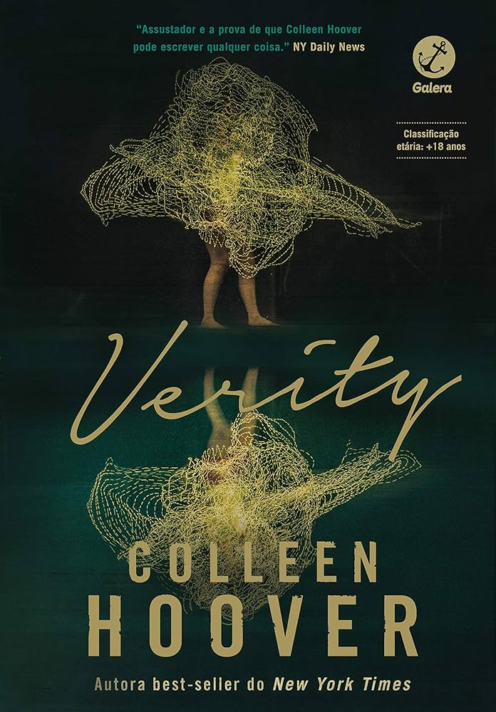

Seja bem-vindo ao Cantinho dos Livros!
Este é um espaço para conhecer diferentes livros, descobrir novas histórias e encontrar uma leitura que combine com você.

Um livro cheio de mistério e suspense, que prende a atenção do leitor do começo ao fim. Você pode encontrar esse livro no Cantinho dos Livros
É um thriller psicológico de suspense que acompanha um brutal assassinato sem solução ocorrido em 1929 no estado do Maine,nos Estados Unidos. Você pode encontrar a o livro no Cantinho dos Livros
Ler pode ser uma forma de aprender, relaxar, conhecer novas ideias e viajar para diferentes lugares sem sair do lugar.